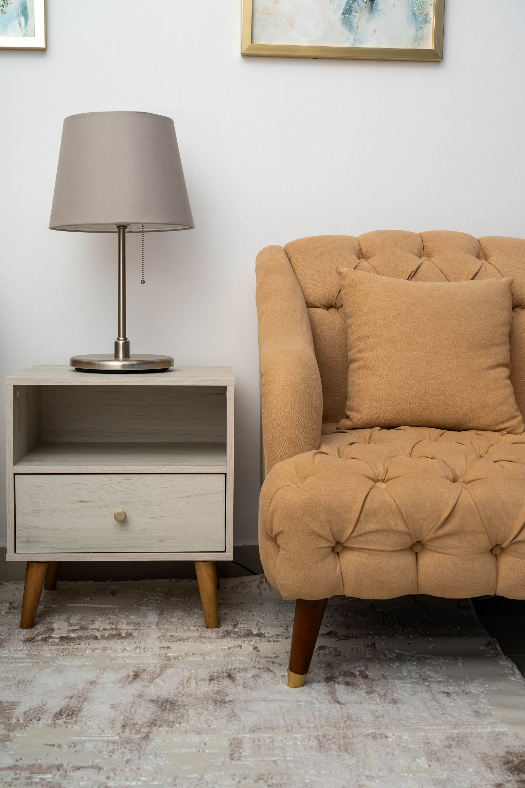
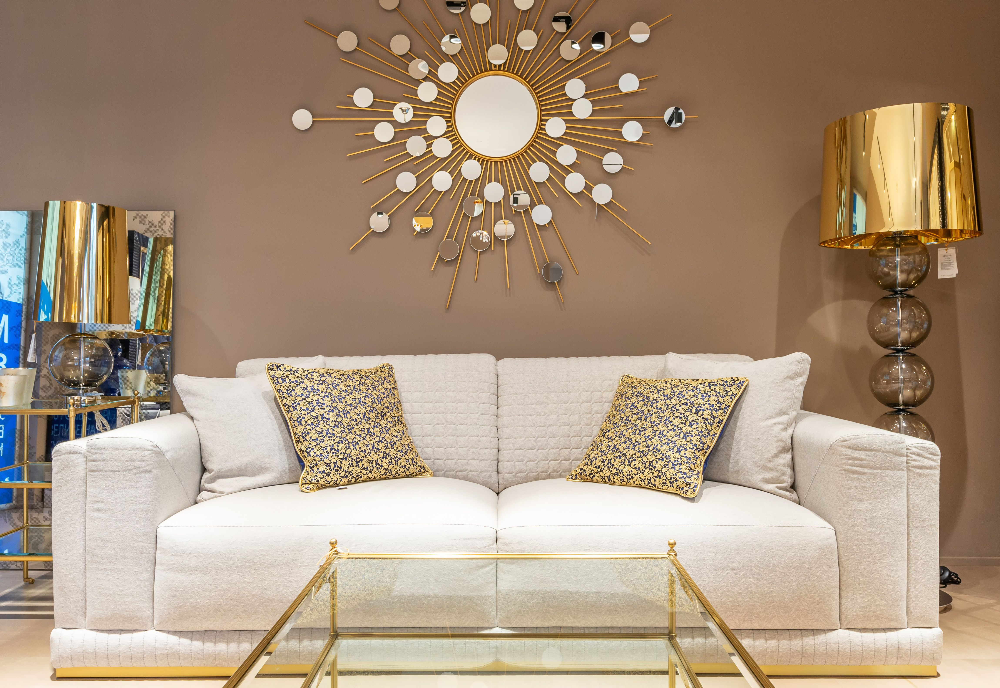
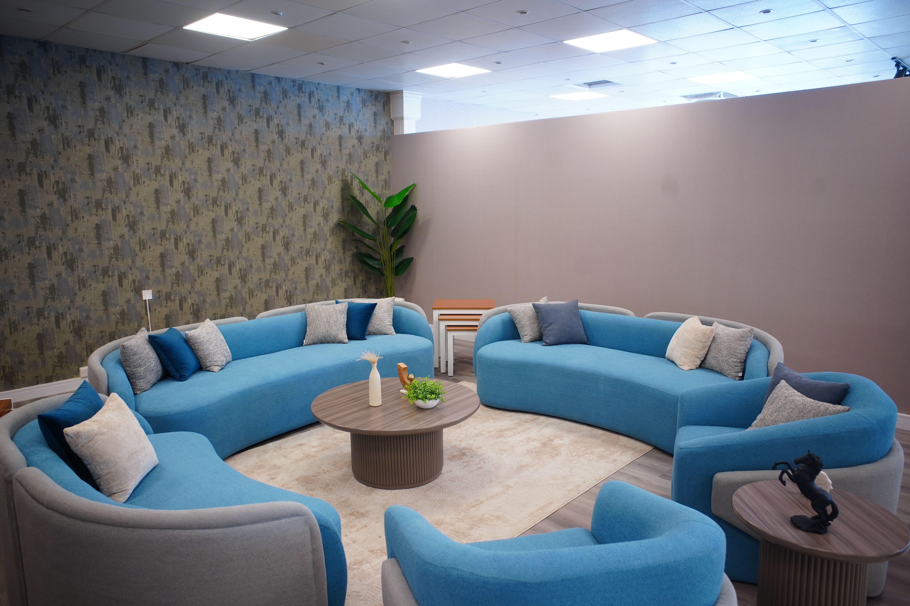

90 منشور
19.5k متابع
10 يتابع
موديرنا للأثاث
صناعة الأثاث المودرن والكلاسيكي بأعلى معايير الجودة لتأثيث منزلك ❤
moderna_factory
صناعة الأثاث المودرن والكلاسيكي بأعلى معايير الجودة لتأثيث منزلك ❤
moderna_factory
ركنك المفضل للاسترخاء في بيتك! 🛋️✨
بعد يوم شغل طويل، مفيش أحسن من مكان مريح تقعد فيه تقرأ كتابك
المفضل أو تشرب قهوتك في هدوء. بنقدم لك الكرسي الكابيتونيه
المودرن بتصميمه المريح مع الطاولة الجانبية الخشبية والأباجورة
لتكملة ديكور بيتك بأرقى لمسة.
مميزات الطقم: قماش فاخر وسهل التنظيف. حشو إسفنج عالي الكثافة
لراحة تدوم خشب طبيعي متين وأرجل خشبيّة بتصميم مودرن. طاولة
جانبية بـ درج تخزين ومساحة للكتب والـ Decor.
اكتب "تفاصيل" في تعليق ويوصلك السعر والمواصفات في رسالة فوراً!
📩
🚚 التوصيل متاح لجميع المحافظات مع المعاينة قبل الاستلام!

الملكية والأناقة تجتمع في بيتك! 👑✨
إذا كنت تبحث عن الفخامة والتميز، فإن هذا الطقم الكلاسيكي المذهب
مصنوع خصيصاً لأصحاب الذوق الرفيع.
✨ تفاصيل الطقم:
الصالون: حفر يدوي مذهب بأفخر أنواع الأقمشة باللون النبيذي
والأوف وايت الفاخر.
سفرة ملكية: طاولة سفرة تسع 8 أفراد مع كراسي مذهبة ذات ظهر مرتفع
ومزين بالتفاصيل الكلاسيكية.
التصميم: يجمع بين الفخامة والراحة ليكون واجهة بيتك أمام ضيوفك.
📩 اكتب "كلاسيك" في التعليقات لتصلك كافة التفاصيل والأسعار في
رسالة فوراً!
🚚 التوصيل متاح لجميع المحافظات مع المعاينة قبل الاستلام.
"الذهبي.. لمسة الملوك في بيتك" ✨🛋️
حوّلي غرفة معيشتك لتحفة فنية بلمسات كلاسيكية-مودرن ساحرة. طقم
الكنب الأبيض الفاخر بتفاصيله المذهبة الدقيقة وخامته الراقية،
يعطيكِ الأناقة التي تحلمين بها مع الراحة المثالية.
🌟 لماذا هذا الطقم؟
تصميم انسيابي وعصري بلمسة ذهبية ملكية.
وسائد مريحة بأقمشة ذات جودة عالية وتفاصيل بارزة مميزة.
يتماشى بامتياز مع الديكورات الذهبية والمرايا المبتكرة لتشكيل
لوحة فنية داخل منزلك.
📩 لطلب التفاصيل أو الأسعار، ابعثي لنا رسالة الآن.
🚛 التوصيل متوفر لجميع المناطق.
#أثاث #ديكور #ذهبي #كنب #فخامة #تصميم_داخلي

البساطة هي عنوان الفخامة! 🤍✨
طقم مودرن أنيق يناسب المساحات العصرية، يمنحك شعوراً بالهدوء
والراحة في كل زاوية.
✨ مميزات التصميم:
طاولة طعام دائرية: بتصميم عصري وكراسي بوكليت مريحة بأرجل معدنية
مذهبة.
أنتريه مودرن: كنب بتصميم انسيابي باللون الأبيض الكريمي مع وسائد
متباينة تضيف لمسة جمالية.
خامات فاخرة: قماش بوكليت عالي الجودة وسهل التنظيف.
📩 اكتب "مودرن" في التعليقات ليصلك السعر والمواصفات الكاملة!
🚚 التوصيل متاح لكل المحافظات مع ضمان الجودة والمعاينة.
"لمّة العيلة مابتحلاش غير في مكان مريح وشيك!" ☕🛋️💙
اجمعي عائلتك وضيوفك في مجلس يعكس روح العصر والراحة الحقيقية. طقم
المجالس المودرن ذو التصميم الدائري المبتكر باللون الأزرق المنعش،
هو الخيار الأمثل للمساحات المفتوحة وغرف المعيشة العصرية.
🌟 أبرز المميزات:
تصميم دائري متكامل يشجع على التواصل والتقارب.
قماش فاخر ومريح بألوان متناسقة (أزرق ورمادي).
يجمع بين الجمال الوظيفي والتصميم الأنيق الذي يناسب نمط حياتك
المودرن.
📩 لطلب الأسعار أو المقاسات، تواصلي معنا عبر الرسائل.
🚛 متوفر خدمة الشحن السريع لجميع المحافظات.
#مجالس #مودرن #أثاث_منزلي #ديكور #تجهيز_شقق #لون_أزرق
#غرفة_معيشة

جلسة مريحة وإطلالة ساحرة تتناغم مع بيتك! 🌿🛋️
تصميم فريد لصالون مودرن واسع يدمج بين الفخامة والراحة التامة،
مثالي للمساحات الكبيرة والإطلالات الزجاجية المفتوحة.
✨ تفاصيل الطقم:
جلسة واسعة: أطقم كنب وكراسي بوف (Armchairs) بتصميم عصري وألوان
محايدة راقية.
طاولات جانبية ووسطية: بتشطيبات رخامية فاخرة وقواعد معدنية أنيقة.
جودة وتدوم: إسفنج عالي الكثافة مع خامات مقاومة للاستخدام اليومي.
📩 اكتب "جلسة" في التعليقات للتواصل واستلام التفاصيل فوراً!
🚚 التوصيل متاح لجميع المحافظات مع المعاينة قبل الاستلام.